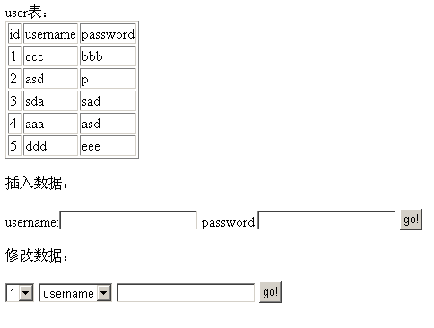
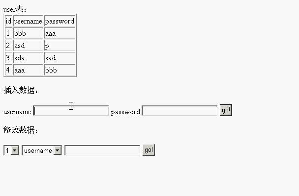
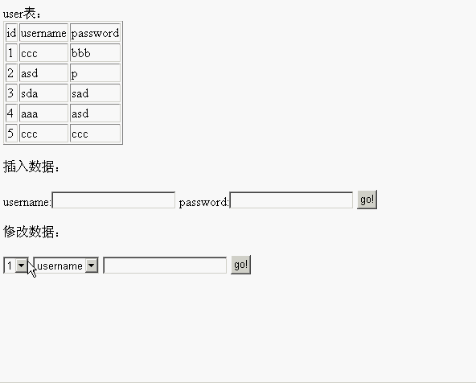
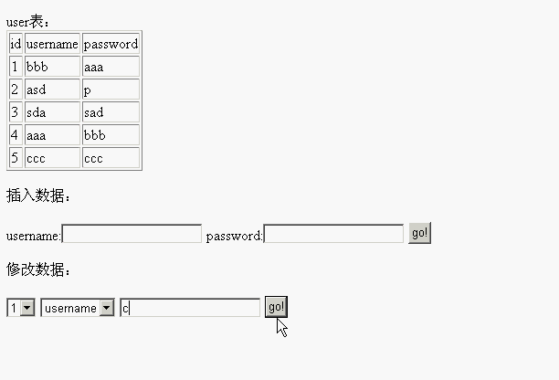
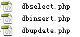

php数据库的增删改查及php与javascript之间的交互
创建时间:
阅读:
这篇文章主要为大家详细介绍了php数据库的增删改查，以及php与javascript之间的交互，具有一定的参考价值，感兴趣的小伙伴们可以参考一下,原地址：https://www.jb51.net/article/122598.htm
使用语言操作数据库是重中之重，如果一门语言你不懂得如何操作数据库，那么你还是没有学会这门语言。
PHP操作数据库的方法并不难
同时php的值还可以与JavaScript脚本之间进行控制
一般是php的值传递到javascript中，一般不会反过来操作
一、基本目标
首先，在mysql中有一张用户信息表user，里面的字段分别是id,username与password，打开网页dbselect.php，首先就用php查出整张user表：

然后，插入数据的一栏，输入数据，就可把数据插入到mysql中的user表当中

在修改数据的一栏中，第一个下拉菜单是通过javascript来创建的，根据表中的数据多少，而给予多少的下拉选项。

第二个下拉菜单让用户选择要修改的列
第三个输入框就是让用户输入要修改的值

至于为什么没有做删除数据，那是因为一来删除数据的操作与修改数据类似，二是因为在自增表中一般不删除数据的，仅仅是设置键值让这条数据隐藏
二、基本思想
程序入口是dbselect.php，操作数据库的过程分别是两个新页面，一个dbinsert.php，一个是dbupdate.php，这两个页面操作完数据库，马上通过javascript返回。

三、制作过程
（1）dbselect.php
也是本实现过程中，最复杂的一个页面
1
2
3
4
5
6
7
8
9
10
11
12
13
14
15
16
17
18
19
20
21
22
23
24
25
26
27
28
29
30
31
32
33
34
35
36
37
38
39
40
41
42
43
44
45
46
47
48
49
50
51
52
53
54
55
56
57
58
59
60
61
62
63
64
65
66
67
68
69
70
71
72
73
74
75
76
77
78
79
80
81
82
83
| <!DOCTYPE html PUBLIC "-//W3C//DTD XHTML 1.0 Transitional//EN" "http://www.w3.org/TR/xhtml1/DTD/xhtml1-transitional.dtd">
<html xmlns="http://www.w3.org/1999/xhtml">
<head>
<meta http-equiv="Content-Type" content="text/html; charset=utf-8" />
<title>dbselect</title>
</head>
<body>
user表：
<table border="1">
<tr>
<td>id</td>
<td>username</td>
<td>password</td>
</tr>
<?php
$con=mysql_connect("localhost","root","root");
if(!$con){
die("连接失败！");
}
mysql_select_db("test",$con);
$total;
$result=mysql_query("select count(*) as total from user");
while($row=mysql_fetch_array($result)){
$total=$row["total"];
}
$result=mysql_query("select * from user");
while($row=mysql_fetch_array($result)){
echo "<tr>";
echo "<td>${row["id"]}</td>";
echo "<td>${row["username"]}</td>";
echo "<td>${row["password"]}</td>";
echo "</tr>";
}
mysql_close($con);
?>
</table>
<br />
<!--以下是两个表单，不再赘述了-->
插入数据：
<form action="dbinsert.php" method="get">
username:<input type="text" name="username" />
password:<input type="text" name="password" />
<input type="submit" value="go!" />
</form>
修改数据：
<form action="dbupdate.php" method="get">
<select id="userid" name="userid"></select>
<script>
var total=<?php echo $total; ?>;
var i=1;
for(i=1;i<total+1;i++){
var selectnode=document.createElement("option");
selectnode.value=i;
selectnode.innerHTML=i;
document.getElementById("userid").appendChild(selectnode);
}
</script>
<select name="rowname">
<option value="username">username</option>
<option value="password">password</option>
</select>
<input type="text" name="rowtext" />
<input type="submit" value="go!" />
</form>
</body>
</html>
|
javascript控制html节点的详细，可以参照我之前写的《【JavaScript】网页节点的增删改查》一文（点击打开链接）
（2）dbinsert.php
1
2
3
4
5
6
7
8
9
10
11
12
13
14
15
16
17
18
19
20
21
22
23
24
25
26
27
28
29
30
| <!DOCTYPE html PUBLIC "-//W3C//DTD XHTML 1.0 Transitional//EN" "http://www.w3.org/TR/xhtml1/DTD/xhtml1-transitional.dtd">
<html xmlns="http://www.w3.org/1999/xhtml">
<head>
<meta http-equiv="Content-Type" content="text/html; charset=utf-8" />
<title>dbinsert.php</title>
</head>
<body>
<?php
$username=$_REQUEST["username"];
$password=$_REQUEST["password"];
$con=mysql_connect("localhost","root","root");
if(!$con){
die("连接失败！");
}
mysql_select_db("test",$con);
mysql_query("insert into user(username,password) values ('".$username."','".$password."');");
mysql_close($con);
?>
<script>
alert("添加成功");
window.location.href="dbselect.php" rel="external nofollow" rel="external nofollow" ;
</script>
</body>
</html>
|
（3）dbupdate.php
与dbinsert.php逻辑是一模一样的，只是mysql_query那个的查询语句，从insert into语句变成了update语句而已
1
2
3
4
5
6
7
8
9
10
11
12
13
14
15
16
17
18
19
20
21
22
23
24
25
26
| <!DOCTYPE html PUBLIC "-//W3C//DTD XHTML 1.0 Transitional//EN" "http://www.w3.org/TR/xhtml1/DTD/xhtml1-transitional.dtd">
<html xmlns="http://www.w3.org/1999/xhtml">
<head>
<meta http-equiv="Content-Type" content="text/html; charset=utf-8" />
<title>无标题文档</title>
</head>
<body>
<?php
$userid=$_REQUEST["userid"];
$rowname=$_REQUEST["rowname"];
$rowtext=$_REQUEST["rowtext"];
$con=mysql_connect("localhost","root","root");
if(!$con){
die("连接失败！");
}
mysql_select_db("test",$con);
mysql_query("update user set ".$rowname."='".$rowtext."' where id=".$userid.";");
mysql_close($con);
?>
<script>
alert("修改成功");
window.location.href="dbselect.php" rel="external nofollow" rel="external nofollow" ;
</script>
</body>
</html>
|
以上，就是整个制作过程。
转载请注明来源，欢迎对文章中的引用来源进行考证，欢迎指出任何有错误或不够清晰的表达。可以在下面评论区评论，也可以邮件至 501596098@qq.com
文章标题:php数据库的增删改查及php与javascript之间的交互
本文作者:Buzi
发布时间:2019-07-30, 13:54:07
最后更新:2019-09-18, 15:09:30
原始链接:http://littlebuzi.github.io/2019/07/30/php/mysql_php/
版权声明: "署名-非商用-相同方式共享 4.0" 转载请保留原文链接及作者。